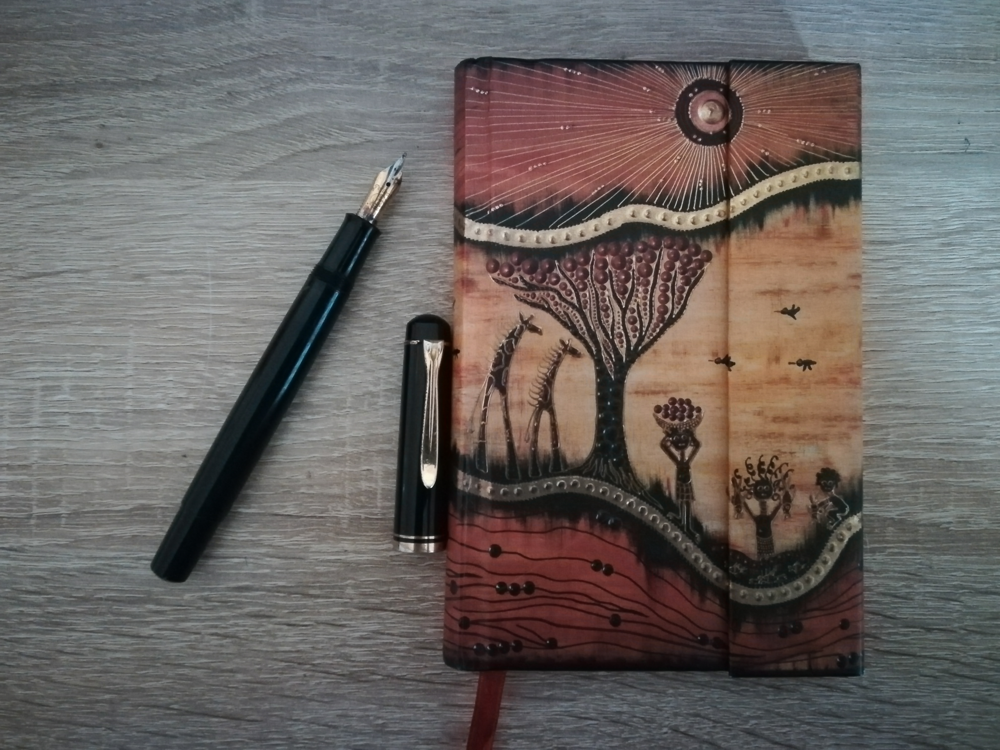

Dieses Wanderbuch schicke ich auf die Reise.Ein kleines Büchlein mit 87 Doppelseiten für 87 Personen mit individuellen Beiträgen! Lese gerne die bisherigen Beiträge, und fülle die nächste freie Doppelseite mit Inhalt. Du bist ganz frei in dem was Du schreibst, und wie Du die Doppelseite nutzt. Du darfst gerne in irgendeiner Form an den letzten Beitrag anknüpfen, oder auch nicht.
Nachdem Du fertig bist, gebe das Wanderbuch an die nächste Person weiter, diese füllt dann die nächste Doppelseite mit Inhalt, und so weiter.
Solltest Du der 87te und letzte Empfänger des Wanderbuches sein, dann schicke es bitte per Post zurück an mich. Meine Anschrift kannst Du dem Impressum auf dieser Seite entnehmen. Ich werde dann das gesamte Wanderbuch hier auf dieser Seite online stellen, damit alle beteiligten und interessierten etwas davon haben.
Warum das ganze? Weil es Spaß macht, und es nicht vorherzusagen ist, was letztendlich daraus wird.
Da ich vorhabe, am Ende alle Inhalte des Wanderbuchs hier online zu stellen, gibst Du mit der Teilnahme an der Gestaltung des Wanderbuches mir die Erlaubnis, Deinen Beitrag öffentlich zu machen. Schreibe also nichts hinein, was nicht öffentlich bekannt werden darf.
Du darfst natürlich auch anonym bleiben, musst Deinen Namen nicht angeben. Ich fände es zwar schön, wenn zumindest der Vorname dabeisteht (so hat das ganze eine persönliche Note), aber das ist ganz Dir überlassen. Du kannst zB. ein Pseudonym benutzen, oder ganz auf einen Namen verzichten.
Damit das ganze nicht im Sande verläuft, achte bitte darauf das derjenige, dem Du das Wanderbuch weitergibst auch wirklich Interesse an diesem Projekt hat.
Ein kleiner Tipp beim Schreiben: Schreibe mit deiner schönsten und leserlichsten Schrift, und ziehe es in Betracht, den Inhalt erstmal auf einem Schmierzettel vorzuschreiben, damit es im Wanderbuch nicht zu von Dir ungewollten Korrekturen oder Durchstreichen kommt.
Bitte beschädige das Wanderbuch nicht! Bitte reiße auch keine Seite aus, und bitte verwende nicht mehr als eine Doppelseite.
Ich fände es sehr freundlich, wenn Du, sobald Du das Wanderbuch erhältst, mir eine Email schreibst mit einer Anmerkung „Das Wanderbuch hat Station 43 erreicht!“ oder so ähnlich, falls Du zB. Doppelseite 43 mit Inhalt füllst. So weiß ich, dass es auf dem Weg ist, und kann dann auch ein Update auf dieser Webseite über den Fortschritt geben.
Das ist nur eine Bitte, es besteht keinerlei Verpflichtung hierzu. Meine Email-Adresse ist im Impressum angegeben.
Falls Du möchtest, gib am Anfang Deines Beitrages an, in welcher Beziehung Du zu der Person stehst von dem Du das Wanderbuch erhalten hast.
Solltest Du das Wanderbuch erhalten haben, aber im Nachhinein doch kein Interesse haben hieran teilzunehmen, dann gebe es nach Möglichkeit demjenigen zurück, von dem Du es erhalten hast. Sollte das nicht gehen, dann bitte ich Dich darum es an jemanden weiterzugeben der Interesse daran hat.
Als letztes ein Hinweis an den letzten Empfänger des Wanderbuches: Solltest Du die 87te und letzte Doppelseite füllen, dann schicke mir bitte das Wanderbuch per Post zu. Falls ich umziehe werde ich meine Anschrift hier im Impressum aktualisieren. Schaue also hier nochmal nach.
13. Dezember 2020: Ich habe den ersten Beitrag geschrieben. :-)